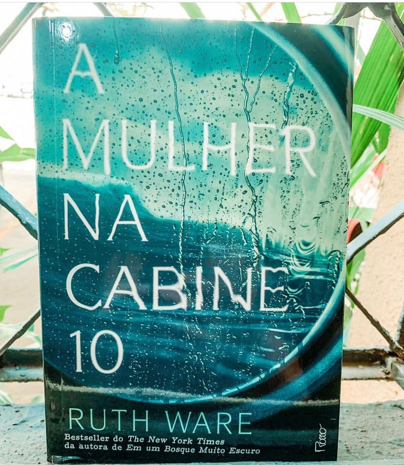

A Mulher na Cabine 10
(Ruth Ware - Rocco)
⭐⭐⭐
A Mulher na Cabine 10 ficou semanas entre a lista dos mais vendidos do The New York Times e a autora Ruth Ware chegou a ser comparada a Agata Christie pela forma de escrever. Não preciso nem dizer, que não é pra tanto.
Lo Blacklock é uma jornalista que acaba de ter sua casa invadida por um ladrão e ainda se recupera do trauma. Ela precisa fazer uma reportagem, para cobrir a viagem inaugural de um luxuoso navio, o Aurora Boreal. Para ela é uma ótima oportunidade de ser promovida e se recuperar do trauma. Em meio a ataques de pânico, remédios fortes e muito álcool uma bela noite Lo acorda com um barulho corre para a sacada e vê o que parece ser corpo jogado ao mar em uma cabine vozinha a sua. Os registros mostram que não haviam ninguém hospedado na cabine ao lado e não tem nenhum tripulante faltando no navio. Não preciso dizer que, ninguém a leva sério e desacreditada pelos outros e por si mesma a jornalista começa sua própria investigação.
Claustrofóbico é a definição para o livro, a descrição e uso excessivo dessa palavra faz com que essa claustrofobia seja paupável durante toda narrativa. O livro é narrado em primeira pessoa pela protagonista e de cara já sabemos que ela não confiável, traumas, uso de medicamentos e álcool deixa o leitor bem desconfiado.
Eu gosto de livros onde temos que duvidar do protagonista, porém esse recurso não foi tão bem utilizado pela autora e acaba sendo um pouco cansativo. Achei a leitura chata e repetitiva em vários pontos: a obsessão de Lo é exagerada e ocupa toda trama, os personagens secundários não são bem desenvolvidos e cara, a mulher não trabalha um segundo no seu real dever.
Por fim saliento que a obra foi bem finalizada e nesse ponto Ruth não deixou a desejar.
“Teria coragem de embarcar no Aurora??”